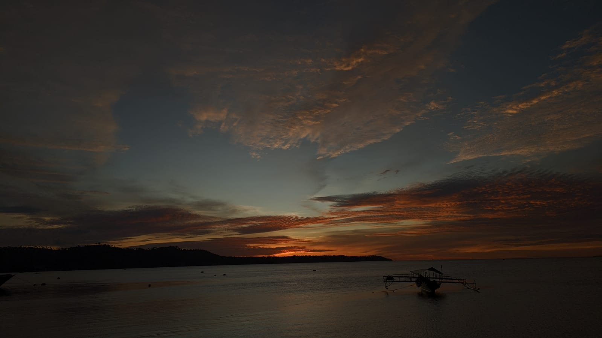
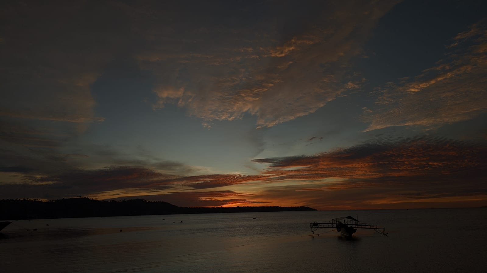

Homepage
Selamat datang di website saya! Saya senang Anda berada di sini.
Di sini Anda dapat menemukan berbagai informasi menarik tentang seni, olahraga, dan teknologi.
Saya menyukai pemandangan, enjoy!!.
Blog
Teknologi: Perkembangan Terbaru dalam Dunia Teknologi
Teknologi terus berkembang pesat dan memiliki dampak besar dalam kehidupan kita sehari-hari. Artikel ini membahas beberapa perkembangan terbaru dalam dunia teknologi, seperti kecerdasan buatan, kendaraan otonom, dan Internet of Things.
Sejarah Kemerdekaan Indonesia: Perjuangan Menuju Kemerdekaan
Sejarah kemerdekaan Indonesia merupakan perjalanan panjang dan penuh perjuangan. Artikel ini mengupas tentang peristiwa-peristiwa penting dalam perjuangan menuju kemerdekaan Indonesia, termasuk proklamasi kemerdekaan pada tanggal 17 Agustus 1945.
Musik: Pengaruh Musik dalam Kehidupan Manusia
Musik memiliki peran yang penting dalam kehidupan manusia. Artikel ini membahas tentang pengaruh musik dalam berbagai aspek kehidupan, mulai dari pengaruhnya terhadap suasana hati hingga peran musik dalam industri hiburan.

 
